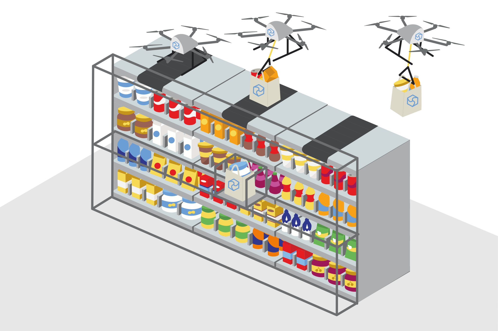

What is Feynman?
Feynman is a business model in which Kernel Dynamics plans to sell its drone delivery operations, which it successfully carried out with the Inertia model, to second parties and corporations as a service. With this model, companies aiming to reach their customers autonomously and quickly can integrate the system and market their own products with the Feynman Store, Feynman Dock and Feynman API produced by Kernel Dynamics.
Who is the Feynman Model for?
An unmanned system with only warehouse attendants.
The business model we call Feynman has two different customer group. Reaching small businesses are our first target. We aim to sell Feynman Docks and Drones to businesses that want to deliver their products to users faster with drones. We also provide an API service that they can integrate into their mobile applications.
The other customer group is chain markets.We plan to completely eliminate their cashier and courier needs with Feynmann Store. They start by storing the products they want in the Feynman Store. By connecting their mobile applications to their warehouses with the Feynman API we have presented, they can control stock and track flights.
How does it work?

Small businesses that want to use the Feynmann model order the Kernel Dynamicsten Feynmann robot package. With this order, FeynmannDock, Quark V1.1, Feynmann API are supplied to the company. The installation of the system is done in front of the store by our technical team. Income is generated from annual maintenance fees and product sales.
In large enterprises, the process works the same as in small enterprises. Only Feynmen Store is used instead of Feynman Dock. In this way, chain stores can have more storage space and do not have to employ personnel.